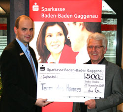

|
Freitag, 31. Dezember 2010 |
„Man kann auch ohne Knallerei feiern"
Bei den Funktionären karitativer Einrichtungen in Rastatt stehen Böller nicht sehr hoch im Kurs
|
(terre des hommes beteiligt sich seit vielen Jahren an der Aktion "Brot statt Böller", die in der Region von Thomas Riedinger initiiert und jahrelang organisiert wurde.)
Regelmäßig werden zum Jahreswechsel in Deutschland rund 100 Millionen Euro in die Luft geballert. Ebenso regelmäßig ertönt der von „Brot für die Welt" vor 30 Jahren geprägte Silvester-Appell „Brot statt Böller". Soll man das Geld „verpulvern" oder es lieber „für sinnvolle Zwecke" spenden? Was machen eigentlich jene, die die Hilfsorganisationen in ihrem Anliegen unterstützen? Wie konsequent halten sie sich selbst an die Böllerabstinenz?
„Bei uns gibt es an Silvester keine Knaller. Wir erfreuen uns daran, geben selbst aber schon seit Jahren kein Geld dafür aus", berichtet Gabriele Floßmann, Geschäftsführerin des Diakonischen Werks der Evangelischen Kirche in Rastatt. „Ich meine, dass man sein Geld sinnvoller einsetzen kann, zum Beispiel für ,Brot für die Welt', um damit notleidenden Menschen zu helfen", sagt die 43-jährige Mutter zweier Kinder - und fügt hinzu: „Die Weltprobleme wird man mit dieser Aktion nicht lösen. Aber meine Familie und ich möchten unseren kleinen Beitrag dazu leisten. Jeder kann im Kleinen damit anfangen."
Genauso sieht das auch Alfred Küpper, Vorstandsvorsitzender des Caritasverbandes für den Landkreis Rastatt. „Wir kaufen keine Böller. Man kann auch ohne Knallerei feiern und vergnügt sein, allein schon, indem man gemütlich zusammen sitzt und gute Gespräche führt", sagt Küpper, der auch Freunde und Verwandte dazu animiert, mitzumachen. Wenn auch „keineswegs mit erhobenem Zeigefinger", wie der 65-Jährige betont. „Aber irgendwo muss man anfangen und bei diesem Thema müsste es einem am ehesten leicht fallen. Als seine heute 35 und 38 Jahre alten Söhne noch Kinder waren, war es „schon ein Spaß", ein bisschen zu knallen, gesteht er. „Doch irgendwann haben sich die Kinder selbst gefragt, was das eigentlich soll."
Dass man das eine tun und das andere deswegen nicht lassen muss, macht der evangelische Pfarrer der Rastatter Thomasgemeinde, Andreas Blaschke, deutlich. „Bei uns wurde und wird meist ein bisschen gebollert, vor allem wegen der Kinder: Ein mittelgroßer Mix von Feuerwerkskörpern - und gut ist." Er freue sich über ein schönes Feuerwerk, sagt der 43-jährige Vater dreier Kinder, aber klar: Man kann es, wie so vieles andere, auch übertreiben. Wichtig ist mir, Menschen, denen es am täglichen Brot mangelt, das ganze Jahr über spendenmäßig im Blick zu behalten - nicht nur am Jahresende und im Blick auf Böller.
An Silvester ist weniger manchmal mehr
Böllern und Helfen sei kein Widerspruch, meint auch Heinz Wolf, der Gründer und Sprecher von terre des hommes (tdh) Murgtal/Mittelbaden: „Bei der Aktion ,Brot statt Böller' geht es meiner Meinung nach nicht darum, jegliche Knallerei und jedes Feuerwerk zu unterlassen. Meine langjährige Erfahrung im karitativen Bereich hat mich gelehrt, dass diejenigen Mitmenschen, die sich selbst etwas gönnen, auch bereit sind, anderen zu helfen. Der Appell richtet sich im Wesentlichen an die Feuerwerksbegeisterten, sich einzuschränken und den eingesparten Betrag an eine karitative Organisation zu spenden. Denn mit diesen und anderen Geldern ist es uns zum Beispiel möglich, etwa 1.000 Kindern in Deutschland, Lateinamerika, Afrika und Asien wirksame Hilfe zukommen zu lassen."
Ähnlich sieht das Sarah Pisterer, Pfarrjugendleiterin der KJG St. Michael Ötigheim: „In meiner Familie gibt's ein wenig Feuerwerk, das gehört zum neuen Jahr dazu. Das Wichtigste aber ist die Familie, sind die Freunde", sagt die 17-Jährige: „Sobald man an das vergangene Jahr denkt, denkt man auch an die Menschen, die einem geholfen haben, und natürlich sollten wir viel öfter an jene denken, die dieses Fest nicht genießen können, weil sie von den Sorgen der Armut geplagt sind." Oft seien diese Menschen gar nicht so weit entfernt.
BNN 31.12. 2010, BNN-Mitarbeiter Ralf Joachim Kraft |
Dienstag, 21. Dezember 2010 |
Murgtäler Schüler spenden 1000 Euro für Flutopfer in Pakistan
Scheckübergabe aus Bucherlösen an terre des hommes
|
|
|
| Schulleiter Stefan Blum und Projektleiter Martin Strauß sowie Schüler der Handelslehranstalt mit Heinz Wolf und Eugen Franke von terre des hommes bei der Scheckübergabe. |
Nach einem arbeitsreichen Jahr steht für die Schüler der Klasse BFW 2/2 der Handelslehranstalt Gernsbach fest: Unser Projekt war ein voller Erfolg. Die Projektgruppe (17 SchülerInnen und 2 LehrerInnen) hatte zusammen das Buch „New Generation – Was uns Jugendliche im Murgtal bewegt“ geschrieben und veröffentlicht.
„Wir haben auf den Weihnachtsmärkten der Region und bei verschiedenen anderen Aktionen über 200 Bücher verkauft und können nun schon vor Weihnachten einen Teil der Erlöse an die Kinderhilfsorganisation terre des hommes spenden“, sagte Gerhard Ilinzer bei der Scheckübergabe in der Handelslehranstalt. Heinz Wolf von terre des hommes bedankte sich bei der Projektgruppe und dem Schulleiter Herrn Stefan Blum für die Spende in Höhe von 1000 Euro. Er würdigte das Projekt der Schüler und betonte, dass es bereits das dritte soziale Projekt der HLA Gernsbach mit Spenden an die Hilfsorganisation sei.
Als Vertreter der zwölf Sponsoren war Dominik Hoesch anwesend, der die Projektgruppe beim Marketing unterstützte. Ein wesentliches Ziel der Projektgruppe war, das Buch im Vorfeld weitgehend durch Sponsoren aus dem Raum Gernsbach/Gaggenau zu finanzieren.
Die Schüler nehmen mit Ihrem Projekt an dem Landeswettbewerb Berufliche Bildung der Landesstiftung Baden-Württemberg teil. Das Buch ist im örtlichen Buchhandel oder im Sekretariat der HLA Gernsbach für 14,95 Euro zu kaufen.
|
Dienstag, 21. Dezember 2010 |
Vorwort zum Buch „New Generation – Was uns Jugendliche im Murgtal bewegt“
|
Zwei Fliegen mit einer Klappe schlagen, ist schon Anlass genug zur Freude. Drei Fliegen mit einer Klappe zu schlagen, kommt als Redensart eigentlich gar nicht vor. Schlussfolgerung: Es gelingt so selten, dass es kaum der Rede wert ist. Aber wenn es gelingt, dann muss man darüber reden/schreiben. Das vorliegende Buch „NEW GENERATION - was uns Jugendliche im Murgtal bewegt" ist ein willkommener Anlass dazu. Stammt es doch von 16-18igen Schülern der Handelslehranstalt Gernsbach, die Geschichten mit unterschiedlichen Themen geschrieben haben. Zum Beispiel Tagebücher über 'erste Liebe' oder 'Scheidung der Eltern', ein Drama zum Thema Drogen, eine Geschichte über Musik, einen Reisebericht eines pakistanischen Schülers, der seine Ferien in diesem fremden Land verbrachte und vieles mehr. Eine Geschichtensammlung, hinter der „von der Mühe des Schreibens" einmal abgesehen, mit jugendlicher Frische, Neugier und Echtheit über das geschrieben wird, was Jugendliche bewegt - und nicht nur Jugendliche im Murgtal. Fliege Nr. 1 könnte man sagen. Fliege Nr. 2 passt zur aktuellen schulischen Situation der Jugendlichen, weil sie im Rahmen ihrer Ausbildung Marketing und Verkauf übernehmen. Was aber nun ist der dritte Aspekt, welcher die Idee abrundet?
Die Einnahmen kommen den Opfern der verheerenden Flutkatastrophe in Pakistan/Afghanistan zugute. Die Hilfe konzentriert sich auf zwei Gebiete, in denen das Kinderhilfswerk Terre des hommes mit lokalen Nicht-Regierungsorganisationen den schwerst-betroffenen Kindern und Familien Notfallhilfe leistet. Dort werden Nahrungsmittel wie Mehl, Reis und Öl, essentielle Hilfsgüter wie Zelte, Decken Hygiene-Kits und Küchenutensilien verteilt. Des Weiteren wird die Errichtung eines Gesundheit-Camps unterstützt. Schwer erkrankte Personen werden in die entsprechenden medizinischen Einrichtungen überwiesen. Außerdem werden Zentren für Kinder eingerichtet, in denen sie an spielerischen Aktivitäten teilnehmen, dabei aufatmen, Zuversicht und Sicherheit tanken können. Insgesamt rechnet Terre des hommes damit, 8500 Menschen, davon 5400 Kindern in etwa 10 Dörfern zu unterstützen.
Dass Jugendliche in Zeiten des Raubtier- Kapitalismus und der Finanzkrise soziales Engagement ins Blickfeld nehmen, macht eigentlich den Kauf dieses Buches zu einem „Muss". Den Jugendlichen und, nicht zuletzt dem verantwortlichen Klassenlehrer Martin Strauß, der die Initiative zu diesem Projekt ergriffen und die notwendige pädagogische Unterstützung gegeben hat, kann man zu dem jetzt schon gelungenen Projekt dankend gratulieren - um es salopper auszudrücken - dieses Buch ist einfach „voll krass".
Wolfgang Deppisch
terre des hommes Murgtal / Mittelbaden
Weitere Informationen zu diesem Buch:
- Autoren & Mitwirkende: Alessandra Venditti, Alina Herfurth, Franziska Kafka, Giulia Paolone, Jasmin Girrbach, Kristin Heck, Marcel Bittmann, Michelle Christin Weis, Michele Chinzi, Patricia Fritz, Saskia Herold, Toseef Ullah
- Layout: Derya Salar, Renate Götzmann
- Werbung: Yannick Hinkelmann, Gerhard Uinzer, Nazli Kaya
- Redaktion: Martin Strauß, Beate Lacher
- Druckerei: BadnerBuch-Verlag GbR, Rastatt
- Umschlagbild: Stefan Kaminski, Gernsbach
- ISBN: 978-3-00-031947-1
- Preis: 14,95 €
- Unterstützer: Förderverein Freunde der HLA Gernsbach und terre des hommes Murgtal/Mittelbaden
- Sponsoren: Glatfelder Gernsbach GmbH & Co. KG, Sparkasse Rastatt-Gernsbach, Volksbank Baden-Baden Rastatt eG, A & U Fashion Gaggenau, Bäckerei Liedtke Gaggenau-Bad Rotenfels, Fahrschule Zehner Gaggenau Gernsbach, Zum Schwarzen Adler Forbach, maxx ! Gesundheitszentrum Gaggenau, Restaurant & Pizzeria Pfeffermühle Gaggenau, R. Kohlhauer GmbH Gaggenau, BadnerBuch-Verlag Rastatt
|
Donnerstag, 16. Dezember 2010 |
Sparkasse Baden-Baden Gaggenau: 500 € für Mädchenprojekte in Afrika
|
|
 |
| Branimir Pavlovic (links), Filialleiter in Kuppenheim, übergibt den Spendenscheck über 500 € an Heinz Wolf, Sprecher von terre des hommes Murgtal/Mittelbaden. |
Nicht nur in Geldgeschäften zeigt die Sparkasse Baden-Baden Gaggenau Präsenz, sie fördert auch lokale Initiativen in den Bereichen Sport, Kultur und im sozialen Engagement. In diesem Sinne unterstützt das regionale Kreditinstitut regelmäßig die rührige Arbeitsgruppe terre des hommes Murgtal/Mittelbaden seit mittlerweile 30 Jahren. Nachdem im vergangenen Jahr die Finanzierung des Kunstkalenders „terre des hommes – Grochowiak 2010“ im Vordergrund stand, wird die diesjährige Jahresspende für Projekte gegen Aids und gegen Mädchenhandel im südlichen Afrika eingesetzt.
|
Freitag, 10. Dezember 2010 |
terre des hommes zum internationalen Tag der Menschenrechte am 10.Dezember:
Moderne Sklaverei für den Textil-Weltmarkt verletzt Menschenrechte junger Inderinnen
|
Zum internationalen Tag der Menschenrechte macht das Kinderhilfswerk terre des hommes auf moderne Sklaverei in der Textilindustrie aufmerksam. Im südindischen Tirupur, einem der größten Textilstandorte der Welt, werden rund 40.000 junge Mädchen in Spinnereien und Nähereien wie Sklaven gehalten und ausgebeutet. »Die Mädchen bekommen etwa 20 Euro im Monat und das Versprechen auf einen Bonus von etwa 500 Euro nach Ablauf von drei Jahren. Sie arbeiten 12 Stunden am Tag, werden auf dem Fabrikgelände in überfüllten Hütten festgehalten und sind Beschimpfungen, Schlägen und sexueller Belästigung durch die Aufseher ausgesetzt«, berichtet Barbara Küppers, Kinderarbeitsexpertin bei terre des hommes, von einem Besuch in Tirupur. Immer wieder versuchten Mädchen, aus Fabriken zu fliehen. Hintergrund dieser Form der Ausbeutung ist das sogenannte Sumangali-System. Es zielt auf die Rekrutierung junger Mädchen aus armen Familien, die den versprochenen Bonus für den Brautpreis nutzen wollen. »Mittelsmänner machen den Familien falsche Versprechungen«, so Küppers. Zulieferer in Tirupur, die Textilien an europäische und amerikanische Handelsunternehmen liefern, nutzen das Sumangali-System zumeist in Spinnereien und Nähereien.
»Das Sumangali-System verstößt gegen Artikel 4 der Allgemeinen Erklärung der Menschenrechte, nämlich das Verbot jeglicher Form der Sklaverei. Es ist eine besonders krasse Form der Ausbeutung, weil die Schutz- und Wehrlosigkeit der Mädchen von Arbeitgebern gezielt ausgenutzt wird«, so Barbara Küppers. »terre des hommes führt gemeinsam mit indischen Projektpartnern in den Herkunftsorten der Mädchen Aufklärungskampagnen über Arbeitsrechte und den Schutz vor Ausbeutung durch und betreut ehemalige Sumangali-Sklavinnen. Wir fordern Handelsunternehmen auf, dafür zu sorgen, dass ihre Zulieferer Existenz sichernde Löhne, feste Arbeitsverträge und Sozialleistungen gewähren.«
Anfang 2011 wird terre des hommes Handelsunternehmen und Arbeitgeber in Tirupur zu einem Runden Tisch mit den örtlichen Menschenrechtsorganisationen einladen. Ziel ist es, die Nutzung des Sumangali-Systems zu beenden und Alternativen zu diskutieren.
Weitere Informationen:
|
Donnerstag, 09. Dezember 2010 |
Grochowiak-Kalender 2011: Erfolgsgeschichte für gute Zwecke wird fortgesetzt
Neues Titelblatt wertet Kunstkalender auf
|
|
|
| Anlässlich des 96sten Geburtstags von Thomas Grochowiaks in Kuppenheim konnte Heinz Wolf (links) von terre des hommes Murgtal / Mittelbaden das neue Titelblatt des Kunstkalenders präsentieren. |
Seit 1977 ist „terre des hommes“ für globale Gerechtigkeit aktiv. Auch in Kuppenheim gibt es seit Jahren eine äußerst aktive Gruppe mit Koordinator Heinz Wolf. Dieser konnte den seit 30 Jahren in Kuppenheim wohnhaften Künstler, Thomas Grochowiak, für ein Kalenderprojekt gewinnen.
635 Kunstkalender mit 13 farbigen Motiven wurden 2009/10 verkauft bzw. an Sponsoren und langjährige, großzügige Spender verteilt, wobei der Erlös für Projekte gegen Aids und gegen Mädchenhandel in Südafrika verwandt wurde. Auch mit der Hilfe von Spendern und Sponsoren konnten 16.000 Euro erlöst werden. Jetzt, anlässlich des 96sten Geburtstags von Thomas Grochowiak, wurde der „neue“ Kalender für einen guten Zweck vorgestellt. Dabei gesellt sich zu den bisherigen zwölf Motiven ein neues, farbenfrohes als Deckblatt hinzu. Diese Arbeit entstand in diesem Jahr bei einem Aufenthalt des Kuppenheimer Künstlers im spanischen Andalusien.
Der Erlös aus dem Kalenderverkauf, so Heinz Wolf, wird zusätzlich für jugendliche Flutopfer in Pakistan verwendet werden. Erhältlich ist der Kunstkalender beim „Fotostudio Cieminski“ in Kuppenheim oder hier online.
Infos und Bestellung |
Donnerstag, 09. Dezember 2010 |
Kinderrechts-Team NOJOUD:
Neue und ältere Zeitungen zum Download
|
Wir, Marie-Lena, Alina, Kathrin, Ronja, Charlotte, Julika, Timm, Dennis, Sarah, Clemens und Sophie, sind das Kinderrechts-Team Nojoud von terre des hommes. Wir wollen anderen Kindern helfen, denen es nicht so gut geht. Dabei haben wir das Angebot von terre des hommes wahrgenommen, ein Kinderrechts-Team zu gründen.
In unserer neuen Zeitung informieren wir über ausführlich die Situation von Kindersoldaten, in welchen Ländern Kinder zum Krieg eingesetzt werden, und was wir in Deutschland dagegen unternehmen können. Willst du mitmachen? Dann schreib einfach eine Mail an Sophie unter sophie.uhing@gmx.de
Nojoud-Zeitung zum Thema "Kindersoldaten" (PDF)
Weitere Zeitungen von uns:
Was heißt Nojoud eigentlich?
Nojoud ist ein Mädchen aus dem Jemen. Sie wurde mit 10 Jahren zwangsverheiratet und missbraucht. Normalerweise fügen sich die Mädchen und Frauen, Nojoud jedoch nicht. Nach zwei Monaten flüchtete sie an ein Gericht in Jemens Hauptstadt Sana. Somit hat sie die Scheidung erreicht, was in ihrer Heimat nicht normal ist. Sie erzählt die Geschichte in dem Buch "Ich, Nojoud, 10 Jahre, geschieden."
Nojoud war sehr mutig. Viele Kinder in schwierigen Situationen brauchen vor allem auch Mut und Hoffnung. Deswegen haben wir unser Kinderrechts-Team nach ihr benannt.
Mittlerweile haben wir schon einen Kuchenverkauf, mehrere Infostände und fünfmal die Aktion "Red Hand" gemacht, um gegen den Einsatz von Kindersoldaten zu protestieren. So haben wir insgesamt rund 1300 € gesammelt. Die roten Hände übergaben wir 2010 am Tag der Kindersoldaten, dem 12. Februar, Außen minister Guido Westerwelle in Berlin. |
Montag, 06. Dezember 2010 |
Bürgermeister Karsten Mußler gratuliert terre des hommes
|
Seit vielen Jahren schon unterstützt die Stadt Kuppenheim die in der Knöpflestadt ansässige Arbeitsgruppe terre des hommes Murgtal/Mittelbaden. Bürgermeister Mußler nutzte den 30. „terre des hommes-Basar“, um den Initiatoren und den vielen Helfern für deren großes Engagement zu danken und ihnen viel Kraft für die kommenden Aktivitäten zu wünschen. Mußler erwähnte dabei auch, dass sich Kuppenheim nicht nur im Bereich Motoball mit einen Deutschen Meister schmücken kann, sondern auch im karitativen Sektor des Spendesammelns.
Dreizehnmal „Deutscher Meister"
Die Arbeitsgruppe Murgtal/Mittelbaden besteht bereits seit mittlerweile 33 Jahren und hat in dieser Zeit nahezu 2,3 Millionen Euro zusammengetragen - für die Unterstützung von Kindern und Jugendlichen, die von Kinderhandel, Kinderarbeit, Bildungsmangel und sexueller Ausbeutung, von Aids, Hunger, Wassermangel und Naturkatastrophen betroffen sind, deren Gesundheit stark gefährdet ist, die sich auf der Flucht befinden, von Kriegen heimgesucht werden oder den ökologischen Wandel unmittelbar verspüren, die Gefahr laufen, ihre kulturelle Identität zu verlieren oder ohne Familie aufwachsen zu müssen.
Im Abrechnungsjahr 2009 konnte terre des hommes Murgtal/Mittelbaden 104.000 Euro erzielen durch Spenden, Sponsorengelder und Aktionserlöse. Mit diesem Betrag war es möglich, über 1.000 Jungen und Mädchen Hilfe zukommen zu lassen. 2009 hat die mittelbadische Gruppe zum dreizehnten Mal in einer Liga von etwa 140 Arbeitsgruppen von terre des hommes Deutschland mit Abstand das größte Ergebnis erzielt und könnte sich, wenn es einen Titel zu vergeben gäbe, als „Deutscher Meister 2009“ bezeichnen.
|
|
|
|
 Ansprechpartner Ansprechpartner
|
|
Wolfgang Deppisch
(Projektinfos)
Tel. 07222 / 32927
Heinz Wolf
(Sponsoring, Allgemeines)
Tel. 07225 / 75543
weitere Ansprechpartner
|
|
Erlöse
1992-2012
|
|

Jahr |
Euro |
1992 |
70.000 |
1993 |
75.600 |
1994 |
83.883 |
1995 |
69.617 |
1996 |
51.412 |
1997 |
61.749 |
1998 |
60.333 |
1999 |
68.742 |
2000 |
85.492 |
2001 |
106.375 |
2002 |
78.937 |
2003 |
84.027 |
2004 |
76.662 |
2005 |
149.941 |
2006 |
84.497 |
2007 |
105.958 |
2008 |
104.053 |
2009 |
100.833 |
2010 |
107.254 |
2011 |
103.600 |
| 2012 |
158.250 |
| 2013 |
163.420 |
1977-2013 |
mehr als 2,7 Mio. € |
|
Detailansicht der Erlöszahlen |
|
|


;)
;)
;)
;)
;)